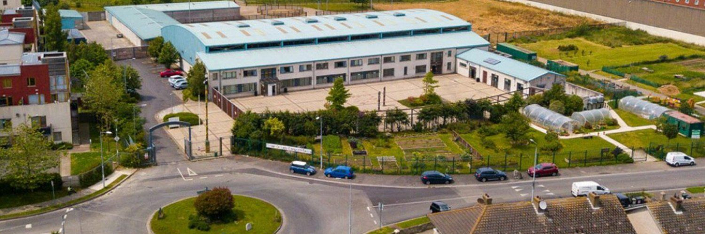
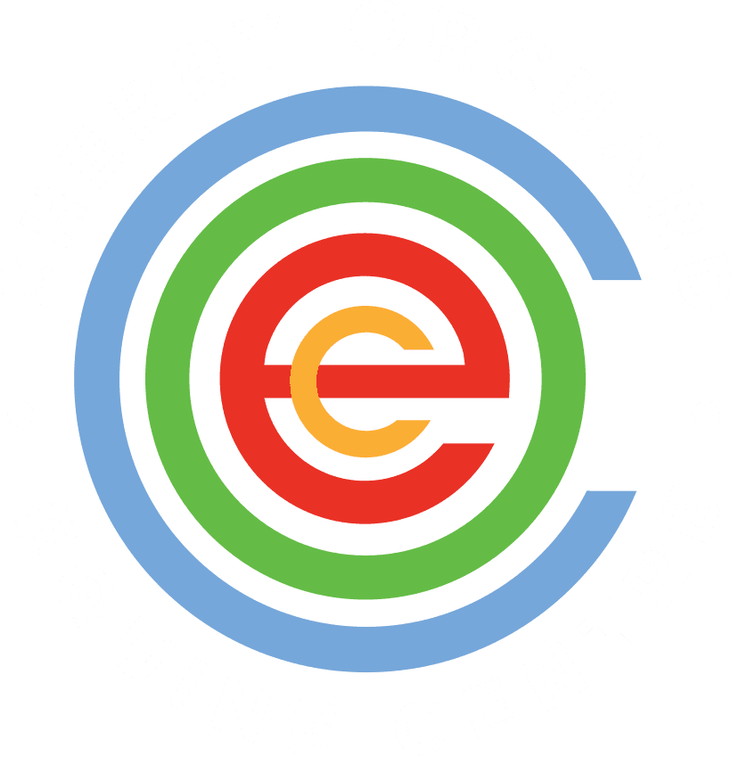

Explore 6 Horse Riding classes for kids in Dublin, Ireland. Compare schedules, ages and pricing below, or contact a provider directly to book.
Balcultry creates a happy environment in which kids can learn about horses, how to ride them, and how to look after them. The welfare of our animals is always paramount.
View full details →

Cherry Orchard Equine Centre offers a range of riding lessons for beginners to advanced riders, catering to all age groups. Lessons follow the AIRE syllabus and focus on fun, progression, and building confidence. Private lessons are also available for those who want one-on-one instruction or aim to advance more quickly. Therapeutic riding sessions are also offered for children and adults with additional needs, promoting strength, balance, coordination, and confidence through gentle, rhythmic movement. During school holidays, Cherry Orchard runs pony camps that include riding lessons, stable management, and fun activities like games and arts and crafts - camps are three hours long and led by qualified instructors. Lessons take place Monday to Friday, 3-8pm, and Saturday, 9am-5pm.
View full details →ChildVision is the only place in Ireland totally dedicated to the education and therapy needs of blind and multi-disabled children. Thousands of children with sight loss and other profound disabilities have bravely overcome their obstacles and grown up to reach their full potential, guided by their expertise and support. ChildVision is primarily an equine therapy facility with a very limited number of horse riding lessons open to the public. Equine therapy lasts 30 minutes or 1 hour, in group blocks available subject to assessment by their occupational therapist. This input provides horsemanship experiences to people with physical, sensory, mental health, psychological and intellectual disabilities, in order to enhance the quality and productivity of their lives.
View full details →Kellystown Riding School's activities are oriented towards teaching the rider to progress in their equitation skills in a safe, fun and challenging environment. Every summer and public holiday season they run a programme of pony camps for children and young teenagers to learn first-hand the full joys and pleasures of equestrian companionship.
View full details →Kilronan Equestrian Centre in Swords, Co. Dublin, offers a welcoming environment for children to learn horse riding and equestrian skills. With highly trained instructors and well-mannered, well-schooled horses and ponies, Kilronan ensures a safe and enjoyable experience for riders of all levels. As an AIRE-approved centre, Kilronan prides itself on maintaining high standards of care and customer service. The family-run atmosphere and beautiful setting make it a unique place to learn and grow in the world of horse riding.
View full details →The Paddocks Riding Centre, located high in the Dublin Mountains, is a family run horse riding centre with stables and facilities to house a large number of horses. Get out of the city and enjoy some riding lessons, or a one/two hour trek through the Dublin mountains enjoying the amazing views and beautiful scenery. They also host birthday parties.
View full details →